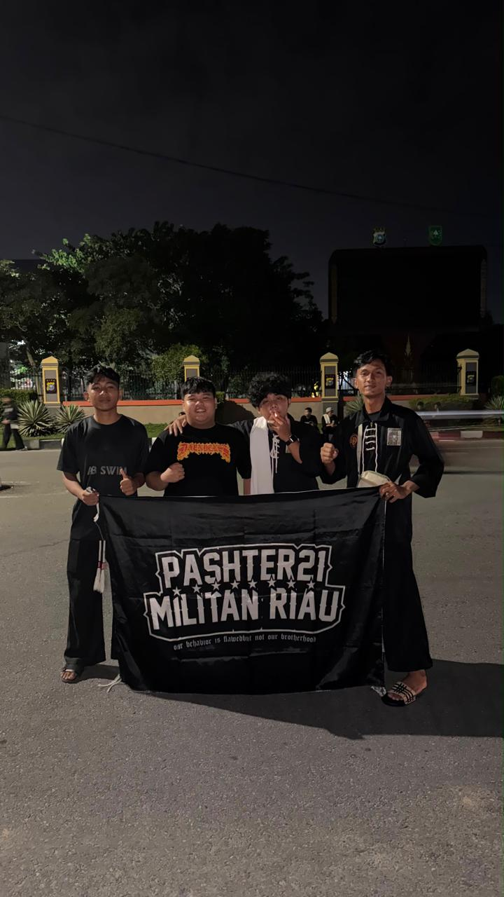
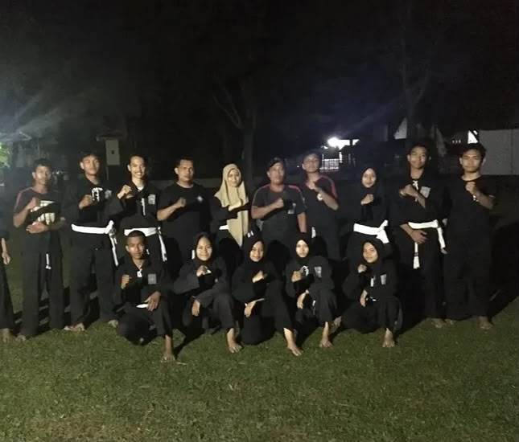
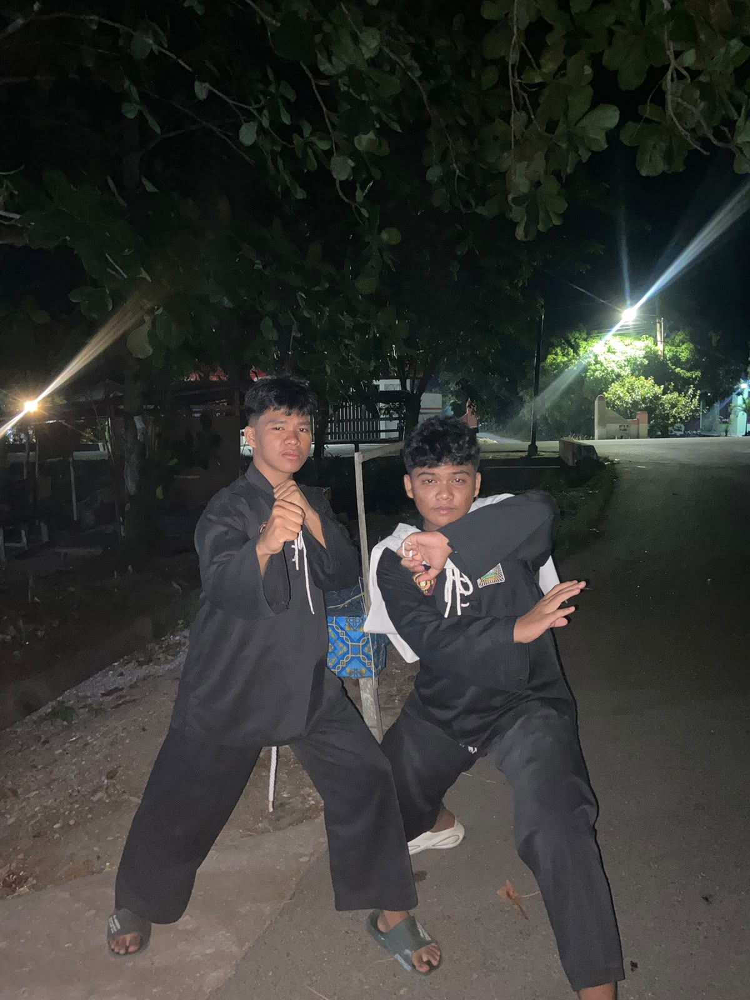

PENCAKSILAT.
Halaman ini saya buat untuk mendokumentasikan perjalanan latihan pencak silat, kegiatan organisasi, pengalaman melatih.
Tiga hal yang saya catat
- LatihanJadwal, teknik, dan disiplin yang dijalani setiap minggu.
- KegiatanOrganisasi, kegiatan bersama, dan pengalaman melatih.
- PrestasiPertandingan, ujian kenaikan tingkat, dan penghargaan.
Dokumentasi

Foto latihan pencak silat
images/silat-latihan.jpg

Foto kegiatan organisasi
images/silat-kegiatan.jpg

Foto prestasi atau pertandingan
images/silat-prestasi.jpg